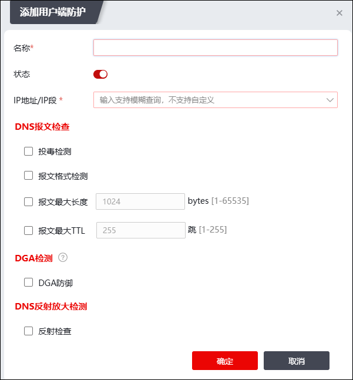
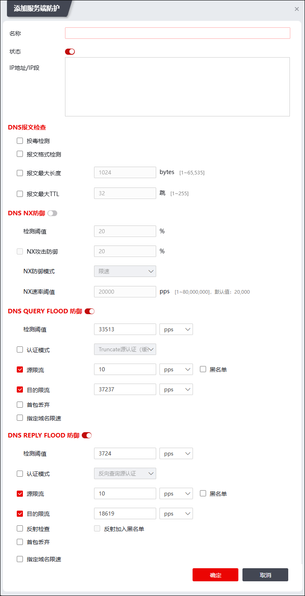

NGFW支持对用户端和服务端配置不同的DNS安全防护策略，以下进行分别介绍。
| 步骤1 | 选择 ，默认激活“用户端防护”页签。点击“添加”，弹出窗口界面如下图所示。 |

配置用户端防护策略时，各项参数的说明如下表所示。
参数 |
说明 |
|---|---|
名称 |
必填项，输入该用户端防护项的名称。 |
状态 |
选择是否启用该用户端防护配置，默认为开启状态。 |
IP地址/IP端 |
必填项，配置需要防护的用户端IP对象。 |
投毒检测 |
选择是否开启DNS投毒检测。 |
报文格式检测 |
选择是否开启DNS报文格式检测 |
报文最大长度 |
选择是否对DNS报文最大长度进行限制，选中后需要配置最大长度阈值，取值范围：1-65535 bytes。 |
报文最大TTL |
选择是否对DNS报文的最大TTL进行限制，选中后需要配置最大TTL阈值，取值范围：1-255 跳。 |
DGA防御 |
选择是否开启DGA防御检测。 |
DNS反射放大检测 |
选择是否开启DNS反射检查。 |
配置完成后，点击【确定】保存用户端防护策略，并自动跳转到访问控制策略配置页面。
| 步骤2 | 配置服务端防护 |
激活“服务端防护”页签，再点击“添加”，弹出窗口界面如下图所示。

配置服务端防护时，各项参数如下表所示。
参数 |
说明 |
|
|---|---|---|
名称 |
必填项，输入该用户端防护项的名称。 |
|
状态 |
选择是否启用该用户端防护配置。 |
|
IP地址/IP端 |
必填项，配置该防护策略应用的IP地址/地址组；最多支持配置16条。 |
|
DNS报文检查 |
投毒检测 |
选择是否开启DNS投毒检测。 |
报文格式检测 |
选择是否开启DNS报文格式检测 |
|
报文最大长度 |
选择是否对DNS报文最大长度进行限制，选中后需要配置最大长度阈值，取值范围：1-65535 bytes。 |
|
报文最大TTL |
选择是否对DNS报文的最大TTL进行限制，选中后需要配置最大TTL阈值，取值范围：1-255 跳。 |
|
DNS NX异常比率检测 |
设置NX异常检测项。 1）检测阈值：统计同一个保护目的在一段时间内发出的NX报文占发出的总报文的比重，单位：%；取值范围：1-100；默认值：20。超过阈值时，判定为NX异常。 2）NX攻击防御：设置执行NX攻击防御的阈值，设置后需选择NX防御模式，可选项：限速、黑名单。选择“黑名单”可执行添加DOS动态黑名单动作；选择“限速”需配置“NX速率阈值”。 |
|
DNS QUERY FLOOD防御 |
设置DNS QUERY FLOOD防御的阈值。 执行DNS query Flood防御后，支持的防御动作包括：cname源认证、truncate源认证、源限流、目的限流、首包丢弃、指定域名限速。 说明： 大量的DNS请求攻击，超出DNS服务器的负荷承载能力，使得正常的请求得不到处理。 勾选“黑名单”可执行添加DOS动态黑名单动作。 防御动作勾选“指定域名限速”并配置了指定域名时，当受保护IP遭到DNS Flood攻击，启动域名限流。 |
|
DNS REPLY FLOOD防御 |
设置进行DNS reply Flood防御的阈值。 执行DNS REPLY Flood防御后，支持的防御动作包括：反向查询源认证、源限流、目的限流、反射检查、反射加入黑名单、首包丢弃、指定域名限速。 说明： 大量的DNS应答攻击，超出DNS服务器的负荷承载能力，使得正常的请求得不到处理。 反射检查：根据DNS REPLY反射攻击的原理（通过伪造DNS请求报文的源IP地址，控制DNS回应报文的流向，这些DNS回应报文就会都被引导至被攻击目标，导致被攻击目标的网络拥塞，拒绝服务），当DNS REPLY报文数超过DNS REPLY FLOOD检测阈值时，可开启DNS REPLY反射防御开关，直接丢弃DNS REPLY报文，抵御DNS REPLY FLOOD攻击。 防御动作勾选“指定域名限速”并配置了指定域名时，当受保护IP遭到DNS Reply Flood攻击，启动域名限流。 |
|
配置完成后，点击【确定】保存服务端防护配置。
|
²此处配置的部分参数和 策略模板 处配置的DOS策略重合。在服务端配置防护策略后，DOS模块也会新增一条相同名称的dns防护策略。 |